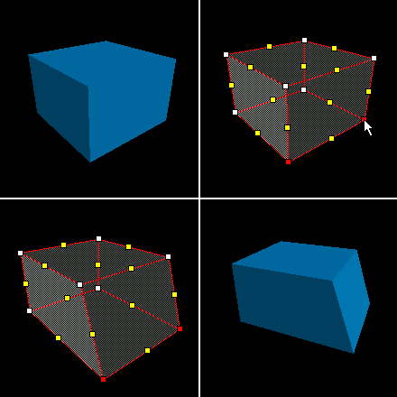
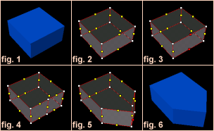
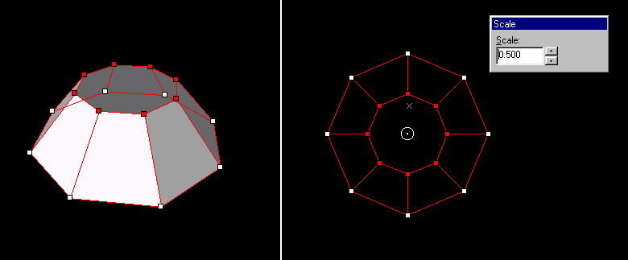
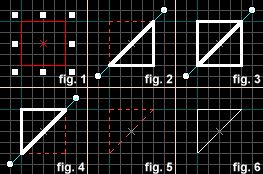
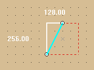
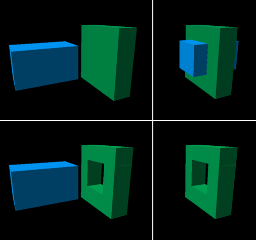
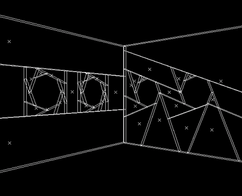

Reshaping Solids
Once you've created a simple, textured solid, you can use Hammer's tools for refining your work. These tools include vertex manipulation, face splitting, clip planes and carving. Each of these tools lets you customize your solids by modifying the basic shapes you started with. You will find that you can achieve the same or similar effect using different tools; some are just faster and easier than others when it comes to making the precise change you are trying to make.
Vertex Manipulation
Vertex manipulation allows you to move individual vertices and edges of a solid, easily creating irregular shapes. This lets you make shapes that are impossible with plane clipping, and extremely difficult to do with carving. Vertex manipulation is also is useful for modifying specific pieces of a group of objects, where resizing would interfere with other objects in the group.
Note: While Vertex Manipulation makes the creation of new complex shapes easy, it also make the creation of invalid shapes easy. Remember that concave shapes are not valid within Hammer.
Vertices and Edges
A vertex (or plural, vertices) is a corner of a solid. Moving one vertex will not effect any other vertex, but it will change the position of any edges associated with it. An edge is a point between two vertices which, when moved, will change the position of its two associated vertices, as well as their associated edges (no other vertices are effected besides the first two).

To edit the vertices of an object:
- Select the object(s) you would like to use vertex manipulation on.
- Select the Vertex Tool from the Map Tools Toolbar. The selected solid will turn into a wireframe image with partial shading. Vertices will be marked as white dots, and edges as yellow dots.
- Click on the vertices/edges you want to move. They will be highlighted in red. Note that you can move both vertices and edges.
- You can either drag the selected vertices or edges with the mouse, or move them in the selected 2D view using the arrow keys.
Note: You can keep selecting the Vertex Tool, or press SHIFT+V, to cycle through the three vertex edit modes: vertices and edges (default), vertices only, and edges only.
Face Splitting
Face splitting allows you to add additional faces to a brush. This is a useful tool when you want to add complexity to an object in your level. Simply select two opposing edges (fig. 3) and press Ctrl+F. This will turn the two edges into vertices, and place a new edge between them (fig.4).

Vertex Scaling
Vertex scaling allows you to select a number of vertices and change their scale in relation to each other.
To scale a set a vertices on an object:
- Select the object(s) you would like to scale vertices on.
- Select the Vertex Tool from the Map Tools Toolbar. The selected solid will turn into a wireframe image with partial shading. Vertices will be marked as white dots, and edges as yellow dots.
- Click on the vertices/edges you want to scale. They will be highlighted in red.
- Press ALT+E to enter to bring up the Scale dialog box.
- Alter the center of the scale operation my clicking and dragging the white circle in the center of the vertex selection.
- Change the Scale value to alter the selected points. You can press the up or down arrows to move in 0.1 increments, or enter a scale value directly in the text area. The scale changes will automatically be reflected on the selected object.
- Press the ENTER or ESC key when you are done scaling to close the Scale dialog box.

Clip Planes
Clip planes let you make a precise cut in a solid, dividing it into two pieces. You then have the option of keeping one or both of the resulting two solids. You may find using Clip Planes quicker and more efficient than carving or vertex manipulation.

- Select the object to be clipped. (fig. 1)
- Select the Clip Plane button on the Map Tools toolbar.
- Drag a line across the selected object. (fig. 2) This is the clip line. The part of the object to be kept will be highlighted in thick white lines.
- When you are satisfied with the resulting object, press Enter to perform the clip. (fig. 5, 6)
Note: You can cycle through the clip modes by clicking on the clip plane button, or by pressing Shift-X (fig.2, 3, 4). You can move both points of the clip line by holding CTRL and dragging one point of it.
Hammer has a feature to display the size of the solid area of the clipped brush. This is useful if you're trying to clip a brush to an exact size.

To toggle this on and off, have a 2D view in focus and press the "o" (lowercase) hotkey.
Carving
In Hammer, any solid can be used to carve a volume out of other solids. For example, you can place a solid within the room's wall and tell Hammer to subtract the solid from the wall -- effectively punching a hole right through the wall! This feature is not limited to using cubic shapes as a carving tool: any solid -- cylinders, cubes and wedges -- can be used to carve other solids.
To carve objects from surrounding solids:
- In this step, you have the object you want to carve into (in blue), and the object you will be carving with (in red). The red object should be selected.
- Position the carving object so that it is where you want the hole to be.
- Select Carve from the Tools Menu. You can also press CTRL+SHIFT+C or the Carve button on the Map Operations toolbar.
- Either delete the object you used to make the carve, or use it to fill the hole. (For example, use the piece carved out of a doorway as the door.)

In the picture above, you can see that the cube (which was previously one object) is now broken into four separate objects. This is because the game engine cannot handle concave objects, and Hammer has broken it into convex pieces.
Note: The Carve operation will carve all objects that touch the selected carving object. Make sure that only objects that you wish to be effected touch the carving object.
While using Carve, especially with a cylinder object, it is best to carve the smallest areas possible. What tends to happen is you have an area you want to punch a hole in, so you make an object with the same shape you want the hole, say for example a cylinder. If you take that cylinder and carve a circle out of a large wall, the entire wall will be broken up. Instead, a more efficient way to carve would be to first carve a square hole (the same size as the circle) and leave the square in place. Then you can take the cylinder and carve a hole in the small square. This will eliminate the splintering effect for the wall.

© 2004 Valve Corporation. All rights reserved. Valve, the Valve logo, Half-Life, the Half-Life logo, the Lambda logo, Steam, the Steam logo, Team Fortress, the Team Fortress logo, Opposing Force, Day of Defeat, the Day of Defeat logo, Counter-Strike, the Counter-Strike logo, Source, the Source logo, Hammer and Counter-Strike: Condition Zero are trademarks and/or registered trademarks of Valve Corporation. Microsoft and Visual Studio are trademarks and/or registered trademarks of Microsoft Corporation. All other trademarks are property of their respective owners.